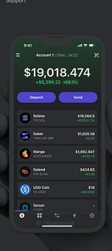

White Space and Clean Design
Star Atlas
StarAtlas.com
Out of all the websites I've come across, Star Atlas by far has the most "negative space" featured around its content. It clearly has a clean design and recently won a prestigious award for most beautiful website. Opening up the page doesn't quite do, because instead of just looking at it, one quickly realizes they must begin to scroll and experience it. As we fly through space, the page features some of its basic concepts that the project aims to bring forward in the future and also explains what they're currently working on. This allows for maximum engagement and catching the eyes of different types of individuals all in one go.
PARC: Repetition
Dogecoin
DogeCoin.com

One visit to this website and you'll understand what it's about. That's right: Dogecoin. In every corner of the website, whether you scroll up or down, change pages, or try to look away, you won't be able to because the adorable Doge stares right back at you everywhere you look. The best part of all of this is that this repititive website and cryptocurrency has already had a headstart in repetition. Before it was a cryptocurrency, it was a famous internet meme. How much more repetition can one get?
Hick's Law
Phantom
https://phantom.app/

Many who have delved into the wild west of web 3 have possibly heard of the new and upcoming crypto called Solana. Whether this currency is just a fleeting bubble ready to pop in the space or whether it's the next big thing is hard to say, however one thing's for certain. Phantom stands out as the most used and trusted wallet for this particular cryptocurrency. Upon visiting this website the first thing we are pushed to do is to download their app. That's really the main point of the website. Download the app. It's that simple. That's the main thing they would like their viewers to do, and it shows.